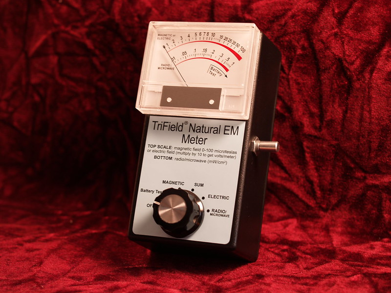
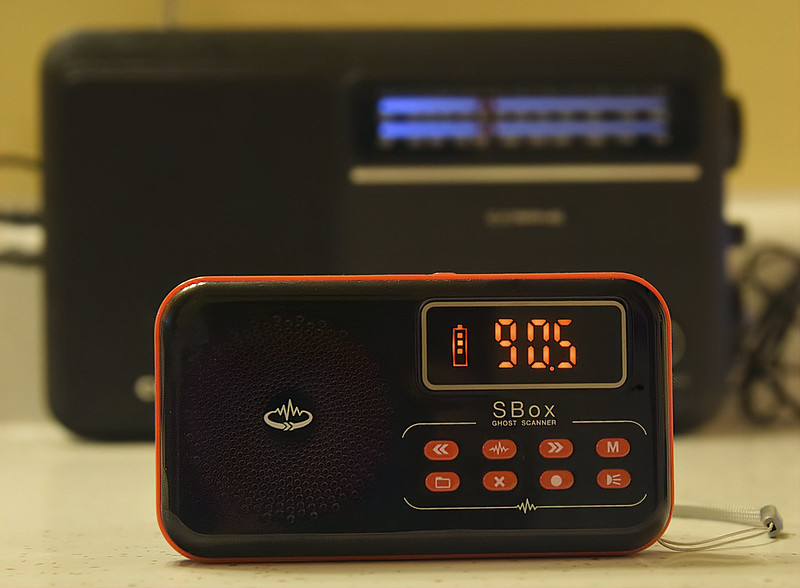
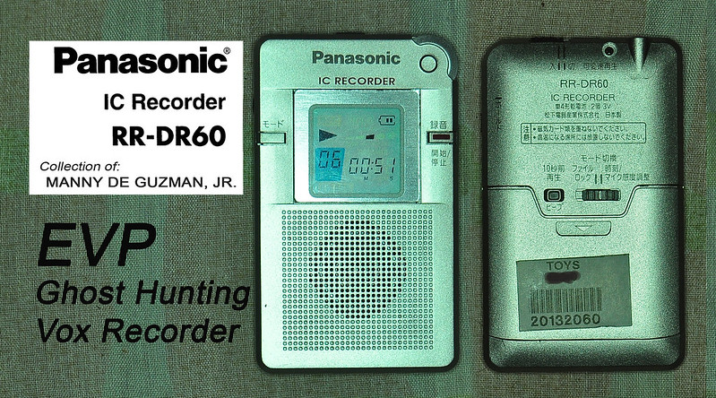
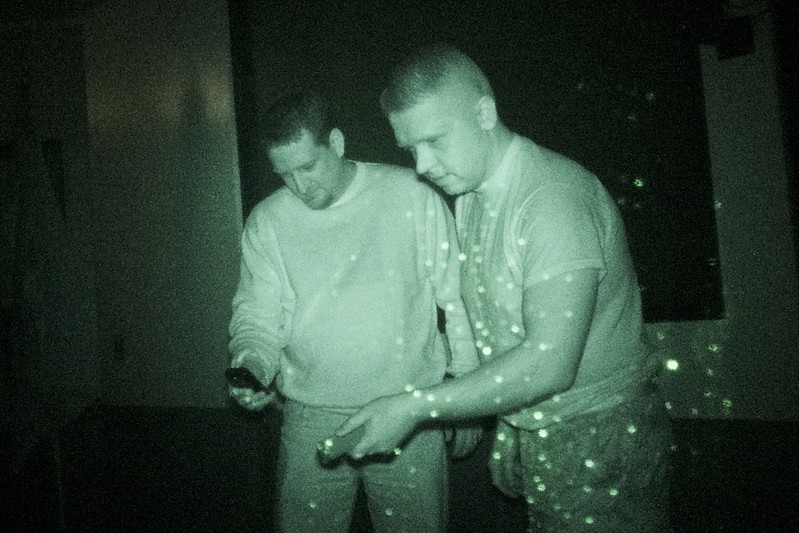
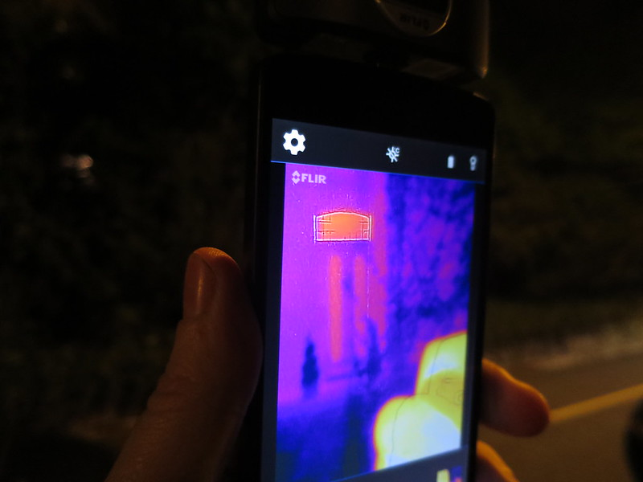
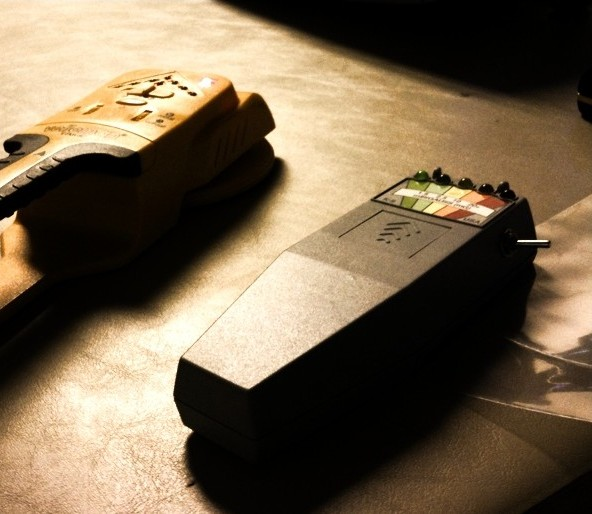

Curious about what tools or gadgets you'll need?
Well, here you'll find information on essential equipment every ghost hunter needs to strengthen their investigations and capture evidence of the unknown.

EMF Reader (Meter)
An EMF reader is a device (usually hand-held) used to detect any fluctuations in electromagnetic fields since some investigators believe it is due to paranormal activity. By identifying this, investigators will be able to see hot activity spots.

Spirit Box
A spirit box is a device that uses radio frequencies, allowing spirits or entities to communicate by manipulating the frequencies. This is used to capture voices or messages from the ghost when asking questions.

EVP (Electronic Voice Phenomena) Recorder
An EVP Recorder is a device used to capture unexplained voices or sounds that are usually not audible to the human ear. Investigators will record sessions with these devices, either in silence or by asking questions, in an attempt to get responses or messages from spirits.

Laser Grid
A laser grid is a device used to be projected across a space to help detect movement if something moves across it. Therefore, if a change occurs in the grid pattern, this may indicate the presence of unseen spirits or entities in the space.

Thermal Camera
A Thermal Cam is used to detect temperature drops or increases while you investigate. This is used to detect where paranormal activity may be occurring and, in some cases, capture the temperature of an unseen entity or spirit.

K-II Meter
The K-II Meter detects EMF fluctuations, displaying changes with a set of colored LED lights that alert investigators to potential electromagnetic disturbances that may signal paranormal activity.
Tool Information Table
Here you’ll see a table containing all information about these tools, their purpose, and their difficulty when using in the field.
| Tool | Purpose | Difficulty |
|---|---|---|
| EMF Reader | Detects electromagnetic field fluctuations to locate activity. | Easy |
| Spirit Box | Captures spirit voices through radio frequency sweeps. | Moderate |
| EVP Recorder | Records inaudible sounds or spirit voices for analysis. | Easy |
| Laser Grid | Helps visualize unseen movement or shadows in a room. | Moderate |
| Thermal Camera | Detects heat anomalies to locate entities. | Advanced |
| K-II Meter | Shows EMF level changes via LED lights. | Easy |
There are numerous tools and gadgets in the ghost-hunting world, with more being added to the list to this day. These, however, are a few devices that every ghost hunter should have to get a reasonable investigation going, making them essential.